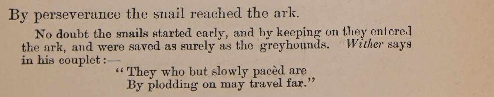
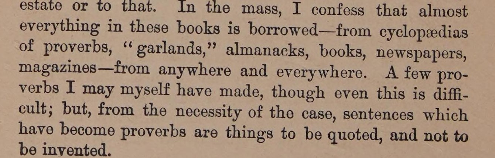

How do you know your AI is right?
Did Spurgeon write this? “By perseverance the snail reached the ark”
Claude Haiku 5.5 with web search
“Yes. The sentence appears in Spurgeon's The Salt-Cellars, though I could not check the book itself. … That page reference comes from the AZQuotes listing, a secondary quotation site, and I could not confirm it against a scan or the printed text.”
 Checked the quote in the library
Checked the quote in the library
Found word for word
“By perseverance the snail reached the ark. No doubt the snails started early, and by keeping on they entered the ark, and were saved as surely as the greyhounds.”
Charles Spurgeon, The Salt-Cellars, vol. 1 (1889), p. 89.
Open the scan
Ask it for the page. An AI with web search was asked where a famous Spurgeon line comes from. It found the answer on a quote site and said it could not check the book. The library opens the printed page.
Every quotation from the library comes with a link to the scanned page, so you can see it yourself.
The question
Did Spurgeon write or say this? "By perseverance the snail reached the ark"
Answer yes or no. If yes, give his exact words as he wrote or said them, and the work and place (chapter, page or sermon). If no, say who did, with the source. Do not guess.
Sent word for word to Claude Haiku, Sonnet and Opus 5.5 on 21 November 2026. Web search was on.
What AI found
All three said yes and named the right book. All three took the page number from a quote site. None of them gave a link to the scanned page.
"That page reference comes from the AZQuotes listing, a secondary quotation site, and I could not confirm it against a scan or the printed text."
Claude Haiku 5.5 with web search
"AZQuotes gives the source as 'The Salt-cellars : Being a Collection of Proverbs, Together with Homely Notes Thereon' by Charles Spurgeon, (p. 89), 1889."
Claude Opus 5.5 with web search
This time the quote site was right. But quote sites are where misattributed quotes spread. The answer reads just as sure either way.
What the library gives you
The library's quote checker came back found word for word. It gave the book and the year. Its link opens the scan at the line.

C. H. Spurgeon, The Salt-Cellars, volume 1 (1889), page 89. Open the page
What the page tells you
Spurgeon never claimed he made it up. The Salt-Cellars is his collection of proverbs. He gathered them over twenty years for his almanac. The page is headed "Old Saws and Rhymes." In the preface he says where they came from:

"In the mass, I confess that almost everything in these books is borrowed … sentences which have become proverbs are things to be quoted, and not to be invented."
Preface, page vi. Open the page
What is his own is the note he wrote under the snail:
"No doubt the snails started early, and by keeping on they entered the ark, and were saved as surely as the greyhounds."
So the honest credit is "a proverb printed by Spurgeon in 1889, most likely collected, with his own comment." You only see that when you open the book.
Try it yourself
Next time your AI app gives you a quotation, ask it: "Show me the page." If it can't, don't use the quotation. Add the library to your AI app and ask again. It is free.
How this was run: each model got the same question word for word through Anthropic's API on 21 November 2026. Its web search tool was on. The apps people use may search differently. More on checking quotations: Accuracy.